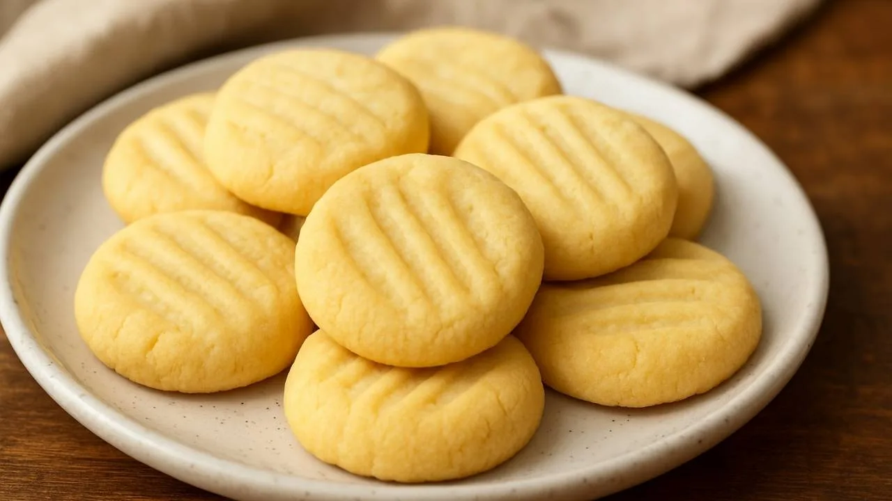

Biscoitos Amanteigados
Ingredientes (15 porções):
- 1 xícara (chá) de farinha de trigo
- ½ xícara (chá) de manteiga
- ¼ xícara (chá) de açúcar
- 1 colher (café) de essência de baunilha
Modo de Preparo ◔:
Tempo: 40 min
- Ligue o forno em temperatura média (180 graus).
- Coloque a farinha, o açúcar, a manteiga e a essência de baunilha numa tigela e amasse bem com as mãos até formar uma massa uniforme.
- Separe a massa em 3 porções.
- Faça um rolinho com cada porção.
- Corte cada rolinho em rodelas de 1cm de espessura.
- Com os dentes de um garfo, aperte levemente cada rodelinha, formando um desenho.
- Unte uma assadeira grande com manteiga e farinha.
- Distribua os biscoitos sobre a assadeira, deixando uma distância entre eles.
- Leve ao forno preaquecido por 25 minutos ou até os biscoitos ficarem levemente dourados.
- Retire do forno, espere esfriar e sirva.